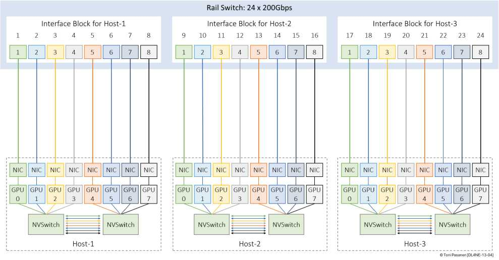
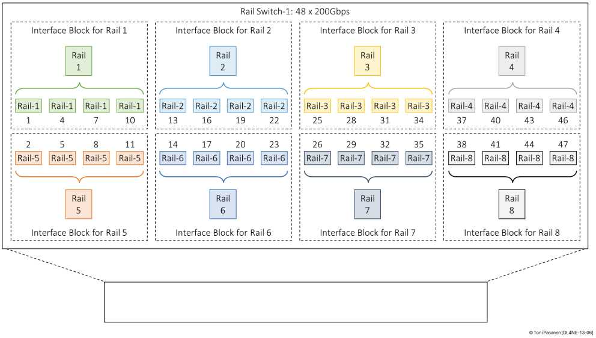

单 Rail 交换机：省钱简单，单点+带宽减半；双 Rail + 双口 NIC/MLAG/EVPN ESI：冗余+双倍，但 MLAG 脑裂、ESI 配置复杂。书 p300-306 逐项 Benefits/Drawbacks，选型看 jobs SLA 与预算。
小规模可不要 Spine：同 Rail 走网，跨 Rail 走机内 NVLink 中转。省 Spine 钱，代价占用 NVLink 带宽 + 跳数不均 + 扩展难。书 p307-313 图解，10 台以内可玩，百卡以上老实加 Spine。
Segment（GPU I/O+Rail）→Pod（Spine）→多 Pod（Super Spine）→Global，逐级收敛比要算。Hash 极化（p322）：ECMP 撞车重现，解法回看 Ch12 喷洒 + Ch11 ECN。结论：无阻塞、lossless、可扩展三者不可兼得，按训练规模取舍。


为 8 卡小集群 vs 800 卡大集群各选一套拓扑并说理由。